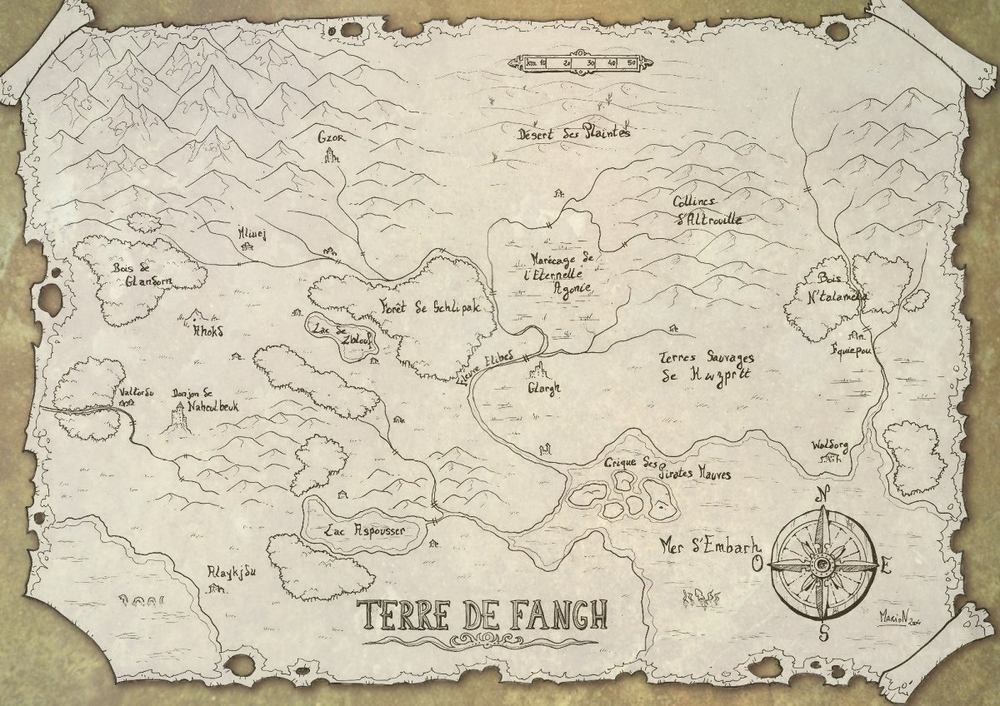
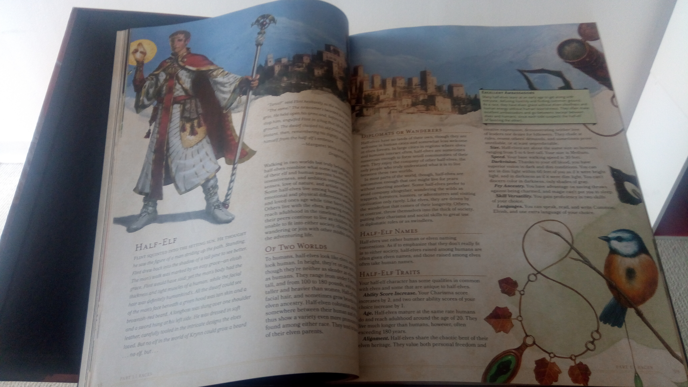

Un JdR en une page
Salut ! Pour cet article je vais parler d’une de mes activités préférées, le jeu de rôle papier, et des règles que j’ai écrites pour être simples, équilibrées et tenir en une page. Si vous ne voulez pas le bla-bla, allez voir tout de suite la section « Téléchargements » en bas de la page.
Qu’est-ce que le jdr ?
Pour commencer, qu’est-ce que le JdR ? Le jeu de rôle papier, ou JdR donc, est une activité qui se déroule autour d’une table, avec du papier, des crayons et des dés de formes étranges. Une scène classique est à peu près comme ça :
Le MJ (maître du jeu) annonce la situation : « vous vous trouvez dans un couloir du donjon, il y a de l’eau qui goutte des parois et il fait plutôt froid. Soudain, quatre gobelins surgissent ! Ils sont petits, verts, puants… bref des gobelins. Que faites-vous ?
Albrecht, Barnak et Choronte, les trois vaillants aventuriers, répondent en chœur qu’ils se préparent au combat. Le premier sort sa hache à deux mains, le second se met en retrait avec son arc, quant à la troisième, elle prépare un sortilège de boule de feu.
Tour à tour, les personnages et les gobelins agissent, les joueurs et le MJ lancent des dés pour décider de l’issue des assauts, des points de vie sont retirés, des cris de haîne poussés, etc.
Après maintes péripéties, les gobelins sont défaits. On peut les fouiller et Oh ! ils avaient 18 pièces d’or sur eux. C’est déjà ça de pris.
Suite au combat, l’aventure peut continuer et les explorateurs continuent leur quête à la recherche du trésor, de l’otage à délivrer ou du dragon à pourfendre.
C’est une situation ici assez clichée, mais on peut faire des JdRs dans des univers autres que le médiéval fantastique : la science-fiction spatiale, le steampunk, une uchronie, les vampires et les loups-garous, ou n’importe quel autre univers fictif ou non de votre choix.
Le JdR se joue en petits groupes de deux à six personnes en général, et prend du temps puisque les sessions atteignent souvent les quatre/cinq heures. (Le plus long que j’ai fait, c’était tout un weekend avec cinq heures de sommeil, m’enfin c’était un peu extrême.)
Mon expérience de jeu
Personnellement, ce qui me plaît dans cette activité, c’est qu’elle est collaborative plutôt que compétitive : les joueurs et le MJ ont tous le même objectif, c’est-à-dire réussir la quête. En outre, il s’agit aussi d’un jeu d’imagination, dans lequel est récompensée l’ingéniosité plus que la performance.
Joueur (on dit aussi « rôliste ») depuis le lycée, j’ai pu tester quelques systèmes de jeu et univers différents. Le premier et celui que j’ai sans-doute le plus joué, c’était (comme beaucoup de débutants), le Donjon de Naheulbeux, basé sur la saga MP3 du même nom. Naheulbeuk vit dans un monde médiéval-fantastique parodique, la Terre de Fangh, dont voici la carte :

Les règles du JdR Naheulbeuk sont conçues pour être équilibrées et simples pour des débutants. Comme l’auteur du jeu est également créateur de la saga MP3, il y a bon nombre de cartes, lieux, extensions au jeu, tableaux d’objets, races, classes, magies et religions jouables. C’est très agréable à jouer, surtout quand on connait déjà l’univers, ça permet d’avoir un monde riche.
J’ai bien apprécié au lycée mon personnage de Nevarius Nevusari, prêtre de Youclidh, un soigneur. L’utilisation de la magie n’est pas très compliquée et se laisse apprivoiser après la lecture des règles spécifiques et d’une ou deux sessions de jeu. J’ai été MJ sur Naheulbeuk, et ça a été très plaisant.
À une période avec un ami, nous avions commencé à créer notre propre jeu de rôle, qu’à ce jour il fait toujours progresser. Nous avions une floppée de races jouables et de spécialités magiques toutes plus bizarres les unes que les autres. C’était vraiment très amusant à créer, l’une de mes plus belles expériences créatives, mais malheureusement je n’ai pas beaucoup eu l’occasion de faire beaucoup de parties.
Puis j’ai joué à Donjons & Dragons. Et là, ç’a été le choc. Parce que c’est monstrueusement compliqué. Mais alors, wow. Déjà le livre basique fait dans les 300 pages. Attendez je vais vérifier… 320. Je n’imagine même pas être MJ sur ce jeu. Bon comme vous pouvez le voir ci-dessous, c’est plutôt classe quand même.

Mais le truc, c’est qu’il y a des règles pour absolument tout. Par exemple lors d’un tour en combat, vous avez le droit à : 1 déplacement ; 1 action d’attaque ; 1 interaction ; 1 action bonus, peut-être autre chose encore. C’est juste un exemple parmi d’autres qui font que, pour moi, c’est injouable, parce qu’il faut connaître toutes les règles et que si elles ne sont pas respectées, il y aura toujours quelqu’un pour le faire remarquer. C’est normal de pointer les irrégularités, cela dit.
Cependant il y a bien des avantages à ce jeu : son immense variété de races, de classes, et un nombre impressionnant de sortilèges pour ceux qui choisissent la pratique de la magie. Il y a aussi énormément d’extensions.
Dernière remarque avant la suite : Naheulbeuk est disponible gratuitement sur internet, et il faut acheter les livres Donjons & Dragons, qui ne sont pas donnés. Mais vu le travail qu’il y a derrière, si l’on aime ce jeu ça vaut le coût.
Mais si comme moi vous êtes plus tourné vers le jeu lui-même que vers le potassage des règles et des grimoires, vous pourrez être intéressé par le système que j’ai écrit.
Comment j’ai écrit des règles simples
J’ai longtemps eu l’envie de créer moi-même un système de jeu de rôle, mais sans jamais vraiment prendre le temps de le rédiger proprement. Jusqu’à ce que je tombe là-dessus : CRAM, the one-page RPG. CRAM (Compressed Roleplaying Adventure Manual) tient en une page (en anglais) et fournit des règles simples. Ce que j’avais à lui reprocher toutefois, c’était que les personnages n’étaient jugés que sur deux caractéristiques : PHY (physique) et MEN (mental). Dans Donjons & Dragons il y en a 7, dans Naheulbeuk 5, mais là deux c’est vraiment trop peu je trouve.

Donc me voilà parti avec quelques idées accumulées au cours des années.
- Il y aura quatre caractéristiques pour les personnages : Constitution, Dextérité, Attention et Magie. Quatre c’est un bon nombre ;
- Les actions de charisme, intelligence et courage se jouent à l’interprétation du personnage (le roleplay), on ne négocie pas avec un marchand sur un jet de dés ;
- Il y aura des points de chance, utilisables pour donner un peu de dynamisme et d’utilité aux réussites et échecs critiques ;
- Aucun univers en particulier n’est attaché au jeu, on peut supprimer la magie carrément ou la remplacer par « psychisme » ou que sais-je ;
- Il faudra des dés à 6 et 20 faces (D6 et D20 dans le jargon) pour jouer, c’est un petit investissement mais c’est bien plus drôle je trouve ;
- Les personnages ne gagnent pas de niveaux, ils dépensent leur points d’expérience pour acheter des améliorations.
Ces règles de jeu tiennent donc également sur une seule page, et sont disponibles en français et en anglais. La fiche de personnage a également été produite par votre serviteur, dans les deux langues.
Elles ont été testées à ce jour durant une seule partie dont j’étais MJ, et ça c’est plutôt bien passé. Je voudrais bien voir ce que ça donne cependant sur une campagne, c’est-à-dire plusieurs parties suivies, pour voir les personnages évoluer.
Téléchargements
- Règles en français (version du 26/08/2018)
- Fiche de personnage en français (version du 16/08/2018)
- Règles en anglais (version du 26/08/2018)
- Fiche de personnage en anglais (version du 16/08/2018)
Qu’y a-t-il à améliorer ?
Il y a encore quelques points d’améliorations à apporter. Je voudrais notamment trouver un système à la mort des joueurs qui leur permette de revenir rapidement en jeu, peut-être qu’ils sont simplement évanouis quand les PVs sont à 0 ? Il faudrait aussi peut-être une vraie liste de compétences et de sortilèges de base. Et pour finir, je souhaiterais créer quelques races jouables, histoire d’éviter que tout le monde soit humain, mais sans rester trop rester dans les classiques de l’elfe et du nain.
Avec un peu de chance ceci pourra être un travail collaboratif (notez la mention « domaine public » en bas des règles), alors si vous avez la moindre remarque n’hésitez pas à me contacter par mail grâce au lien présent dans le menu à gauche. C’est prévu d’ajouter des commentaires sur le blog, mais pour le moment voilà.